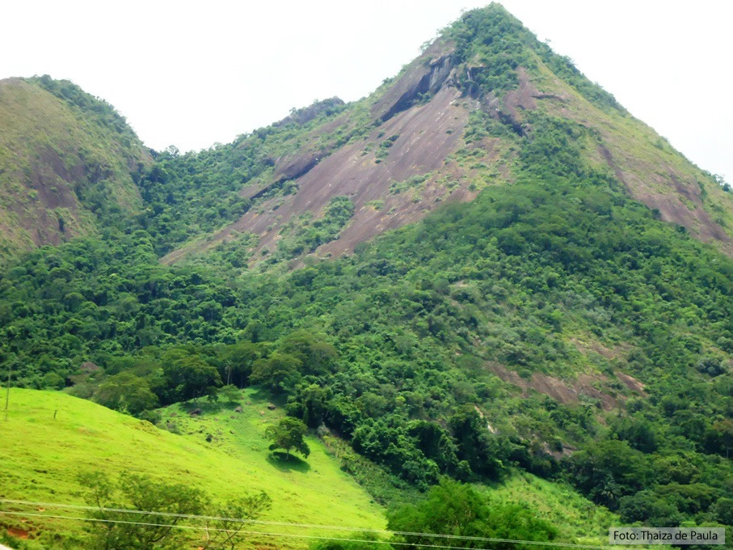

Minha casa
Uma roça aconchegante onde moro com meus pais, minha irmã e meus gatos. Fica localizada em um local com visão para a Pedra do Pombal.
Uma roça aconchegante onde moro com meus pais, minha irmã e meus gatos. Fica localizada em um local com visão para a Pedra do Pombal.
Melhor açaiteria de Alegre, localizada na praça do pico. Link do Instagram.
Queda d' água de 144 metros de altura ideal para contemplação, fotografias e "banho de neblina" (provocado pelas gotículas de água em suspensão). Poços para banho são raros devido a ocorrência de forte corredeira no rio.
Localizado na estrada de acesso ao Parque, na ES-484, próximo ao portal de madeira. Do alto é possível avistar a Cachoeira da Fumaça e suas encostas com exuberante vegetação. É o primeiro ponto de parada dos visitantes para contemplação e fotografias panorâmicas. Link do site.
| Alegre | ||
|---|---|---|
| População estimada | 29.869 pessoas (2021) | Fonte: IBGE |
| Área territorial | 756.860 | |
| IDH | 0.721 | |
| PIB | R$476.962,31 | |
| PIB per capita | R$15.854,35 | |
{kind=link}